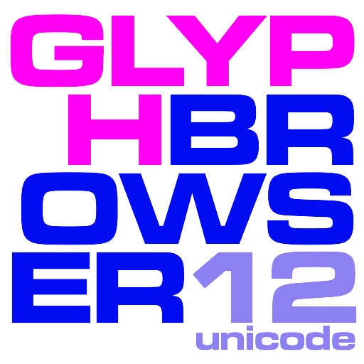
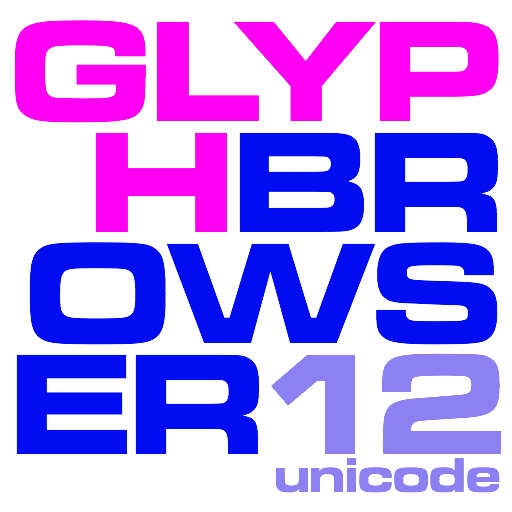
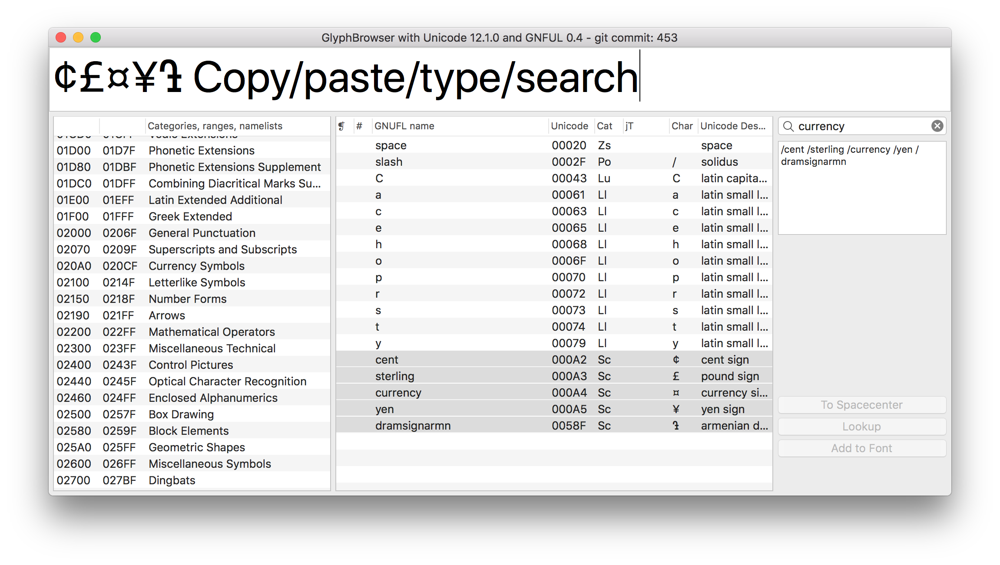

GlyphBrowser for RoboFont
The GlyphBrowser tool for RoboFont shows a list of unicode values and glyphnames from the GlyphNameFormatter project. You can search and select names and then create these glyphs in the current font. GlyphBrowser contains a copy of the latest GlyphNameFormatter GNUFL list, but they're separate projects.

Usage
- You can copy / paste / type text in the big bar at the top. The relevant unicode characters are listed
- Use the search field for glyph names, partial names or unicode values
- For Arabic glyph names, the joining types data from Unicode will be used to construct appropriate variants. For instance,
0x00628, beh, will generate /beh /beh.init /beh.medi /beh.fina
- Please note that additional support may be needed to make the selected characters into working fonts. RoboFont does not automatically support everything.
- Control-click on one or a selection of glyphs gives you a contextual menu to copy the names in different formats, as well as add the glyphs to a specific, or all open UFOs.
Reporting
GlyphNameFormatter and GlyphBrowser are very much community projects and they rely on your feedback.